Diary Entry 6: (Valley) Deep Gulch I Saved a Mysterious Man's Life We found ourselves in a vast Canyon. The water here was so clear and pure. As we pressed on through the canyon, we came to a stunningly beautiful waterfall. There seemed to be a path hidden underneath, so we flew straight through and ended up in an underground tunnel. As we emerged, we saw schools of fish swimming freely in the crystal clear waters. The dragon being playful, shot one of the fish with its lasers. This caused the fish to jump straight up in front of us! On our journey across the everlasting valley, we came upon a menacing Baldor Queen, who viciously blocked our path. We managed to defeat it, only to run into one more. After the battle, we made our way to another tunnel, which lay hidden behind another amazingly jaw dropping waterfall. Upon exiting, we immediately heard a loud crashing noise, and saw smoke raise up in the distance. We hurried to see what it was. A man's life was being threatened by a massive monster, an ugly one at that. The dragon fired its arrows of light, halting the beasts pursuit. I told the man to go hide in a cave, while we fight the creature. He agreed, and we fought a long drawn out battle. After the battle was won, the man introduced himself. He said his name was Skiad-Ops-Gash, but just Gash was fine. He also said he was a seeker. Even though we saved his life, he asked for yet another favor. He wondered if we could do one last thing for him and take him to Cainus Village. After he said he could help us out by providing knowledge of local ruins and monsters, I agreed. We disembarked for the Village of Cainus. 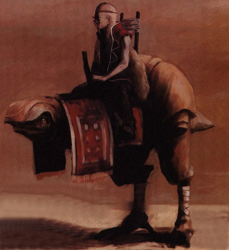 |
|
| Divine
Overview |
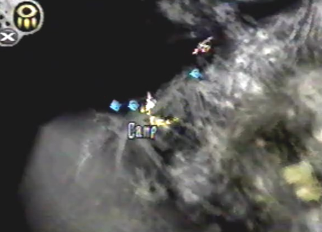 1. When you first enter Valley Deep Gulch, be sure to exit and go to the map. The first Camp Site has appeared, go to it. If you don't, you will end up missing this area of the game. |
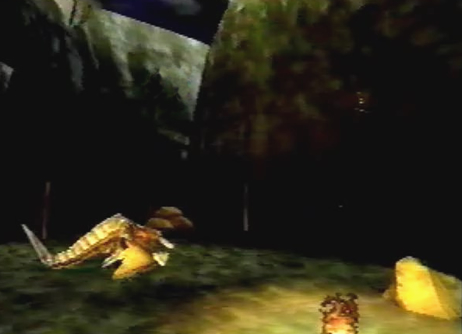 2. Let the dragon recover from past battles. |
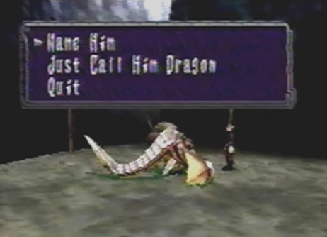 3. In the morning, if you lock-on to your dragon, you are given the option to name him. Pick any name that is to your liking, except "Dragon". After naming him, if you lock-on to him again, you can choose to smile or pet him. Don't do any of these yet. Just name him for now. There is a special attack called Astral Phantoms, that you can acquire by petting your dragon a certain amount of times. You don't have to pet your dragon, not even once, throughout disc 1 and the beginning of disc 2 until: you defeat Drenholm at Uru, and acquire Protect Key # 3 from Uru Deep North. After these events have taken place, you can exit to the World Map and finally return to camp, to begin petting your dragon. All you have to do at this point, is pet the dragon six consecutive times and return to camp once more after the sixth time, to finally receive the technique. This is the earliest point in the game you can learn Astral Phantoms. Special thanks to Arcie and Lanceway for providing me with each of their views on how to learn this technique. Phew, that was a mouth full! |
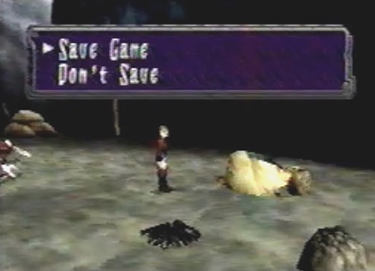 4. Have Edge lock-on to the tent and you can save your game. Do so and go back to the Valley Deep Gulch. Note, to get back there, you have to fly through Excavation Site # 4, but it doesn't take that long. |
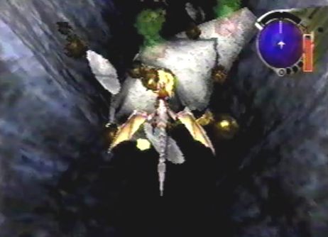 5. When you first arrive back at Deep Gulch, be sure to lock-on to the wreckage of an Imperial ship. You will receive a recorder, and get to hear the ships last transmission. |
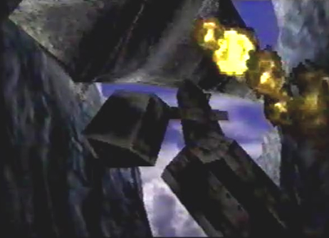 6. After the transmission is finished, the bottom half of the ship falls apart. |
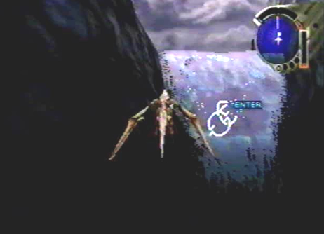 7. Take the path that leads under the waterfall. It contains 3 items. |
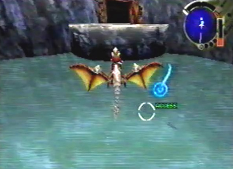 8. After emerging from the waterfall tunnel, you will see a school of fish swimming freely in the crystal clear waters. Lock-on to any one of them. |
|
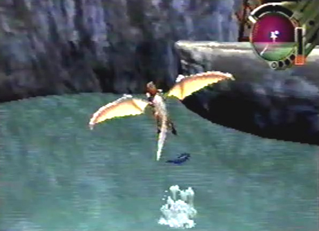 9. The fish will jump out of the water, a cool thing you might otherwise miss if you weren't paying attention to your surroundings. |
|
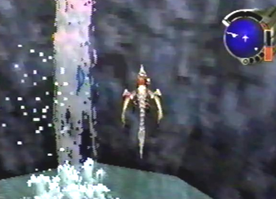 10. Go past the two waterfalls that can be found on the right wall near where the left path joins the right path. The next lone waterfall to the right, will have fish that continually swim up it. Neat! |
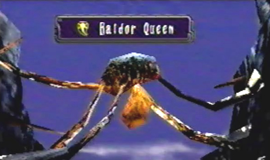 11. Your path will soon be obstructed by a menacing Baldor Queen! Destroy it and move on. After this battle, you will yet again have to fight one more of these behemoths. |
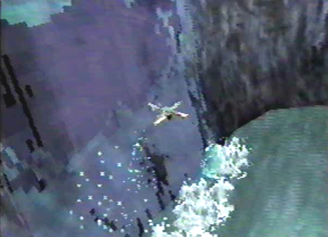 12. Make your way to the exit, under this beautiful waterfall. |
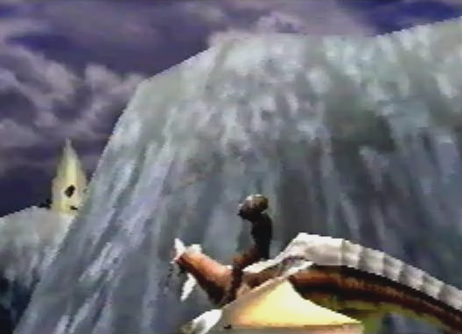 13. You will find yourself in yet another stretch of valley. But what is this? Something is happening in the distance. What could it be? |
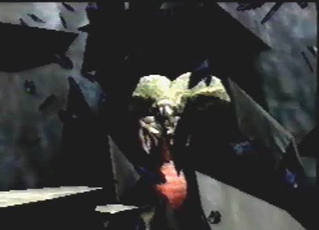 14. A GIGANTIC ARACHNOTH, that's what it is!! |
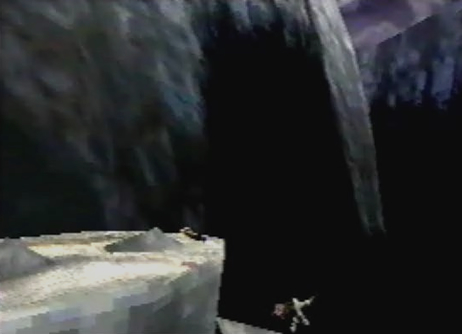 15. The Arachnoth almost causes this man to fall to his death. He makes it to safety, but his trusty Coolia isn't so lucky. Nooo, poor Coolia, WHHHHHHHY?! |
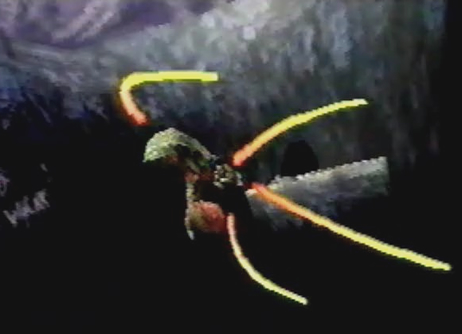 16. The dragon comes to the rescue! Defeat the massive beast and save your skins. |
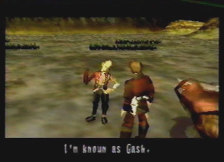 17. The man introduces himself, and asks you for another favor. He wonders if you could take him to the Village of Cainus, your next destination. |
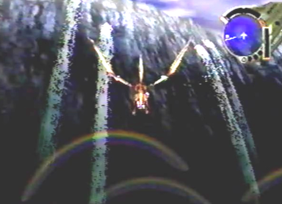 18. Note, if you come back to the Valley Deep Gulch after defeating the Arachnoth, you can see colorful rainbows just before the waterfall tunnel. You have to turn on an angle to see them. |